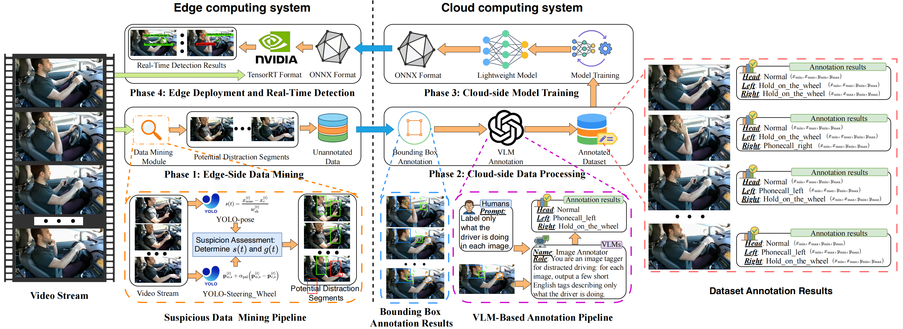

<!DOCTYPE html>
<html lang="en">

<!-- Google Analytics 4 -->
<!-- Google tag (gtag.js) -->
<script async src="https://www.googletagmanager.com/gtag/js?id=G-MCHHQLEFQ4"></script>
<script>
  window.dataLayer = window.dataLayer || [];
  function gtag(){dataLayer.push(arguments);}
  gtag('js', new Date());

  gtag('config', 'G-MCHHQLEFQ4');
</script>


<head>
  <meta charset="utf-8">
  <meta name="viewport" content="width=device-width, initial-scale=1">
  
  <!-- Primary Meta Tags -->
  <!-- TODO: Replace with your paper title and author names -->
  <meta name="title" content="PAPER_TITLE - AUTHOR_NAMES">
  <!-- TODO: Write a compelling 150-160 character description of your research -->
  <meta name="description" content="BRIEF_DESCRIPTION_OF_YOUR_RESEARCH_CONTRIBUTION_AND_FINDINGS">
  <!-- TODO: Add 5-10 relevant keywords for your research area -->
  <meta name="keywords" content="KEYWORD1, KEYWORD2, KEYWORD3, machine learning, computer vision, AI">
  <!-- TODO: List all authors -->
  <meta name="author" content="FIRST_AUTHOR_NAME, SECOND_AUTHOR_NAME">
  <meta name="robots" content="index, follow">
  <meta name="language" content="English">
  
  <!-- Open Graph / Facebook -->
  <meta property="og:type" content="article">
  <!-- TODO: Replace with your institution or lab name -->
  <meta property="og:site_name" content="INSTITUTION_OR_LAB_NAME">
  <!-- TODO: Same as paper title above -->
  <meta property="og:title" content="PAPER_TITLE">
  <!-- TODO: Same as description above -->
  <meta property="og:description" content="BRIEF_DESCRIPTION_OF_YOUR_RESEARCH_CONTRIBUTION_AND_FINDINGS">
  <!-- TODO: Replace with your actual website URL -->
  <meta property="og:url" content="https://YOUR_DOMAIN.com/YOUR_PROJECT_PAGE">
  <!-- TODO: Create a 1200x630px preview image and update path -->
  <meta property="og:image" content="https://YOUR_DOMAIN.com/static/images/social_preview.png">
  <meta property="og:image:width" content="1200">
  <meta property="og:image:height" content="630">
  <meta property="og:image:alt" content="PAPER_TITLE - Research Preview">
  <meta property="article:published_time" content="2024-01-01T00:00:00.000Z">
  <meta property="article:author" content="FIRST_AUTHOR_NAME">
  <meta property="article:section" content="Research">
  <meta property="article:tag" content="KEYWORD1">
  <meta property="article:tag" content="KEYWORD2">

  <!-- Twitter -->
  <meta name="twitter:card" content="summary_large_image">
  <!-- TODO: Replace with your lab/institution Twitter handle -->
  <meta name="twitter:site" content="@YOUR_TWITTER_HANDLE">
  <!-- TODO: Replace with first author's Twitter handle -->
  <meta name="twitter:creator" content="@AUTHOR_TWITTER_HANDLE">
  <!-- TODO: Same as paper title above -->
  <meta name="twitter:title" content="PAPER_TITLE">
  <!-- TODO: Same as description above -->
  <meta name="twitter:description" content="BRIEF_DESCRIPTION_OF_YOUR_RESEARCH_CONTRIBUTION_AND_FINDINGS">
  <!-- TODO: Same as social preview image above -->
  <meta name="twitter:image" content="https://YOUR_DOMAIN.com/static/images/social_preview.png">
  <meta name="twitter:image:alt" content="PAPER_TITLE - Research Preview">

  <!-- Academic/Research Specific -->
  <meta name="citation_title" content="PAPER_TITLE">
  <meta name="citation_author" content="FIRST_AUTHOR_LAST, FIRST_AUTHOR_FIRST">
  <meta name="citation_author" content="SECOND_AUTHOR_LAST, SECOND_AUTHOR_FIRST">
  <meta name="citation_publication_date" content="2024">
  <meta name="citation_conference_title" content="CONFERENCE_NAME">
  <meta name="citation_pdf_url" content="https://YOUR_DOMAIN.com/static/pdfs/paper.pdf">
  
  <!-- Additional SEO -->
  <meta name="theme-color" content="#2563eb">
  <meta name="msapplication-TileColor" content="#2563eb">
  <meta name="apple-mobile-web-app-capable" content="yes">
  <meta name="apple-mobile-web-app-status-bar-style" content="default">
  
  <!-- Preconnect for performance -->
  <link rel="preconnect" href="https://fonts.googleapis.com">
  <link rel="preconnect" href="https://fonts.gstatic.com" crossorigin>
  <link rel="preconnect" href="https://ajax.googleapis.com">
  <link rel="preconnect" href="https://documentcloud.adobe.com">
  <link rel="preconnect" href="https://cdn.jsdelivr.net">


  <!-- TODO: Replace with your paper title and authors -->
  <title>CEDDet: A Cloud–Edge Collaborative Framework for Real-Time Driver Distraction Detection in Low-Resource In-Vehicle Scenarios</title>
  
  <!-- Favicon and App Icons -->
  <link rel="icon" type="image/x-icon" href="static/images/safe.png">
  <link rel="apple-touch-icon" href="static/images/safe.png">
  
  <!-- Critical CSS - Load synchronously -->
  <link rel="stylesheet" href="static/css/bulma.min.css">
  <link rel="stylesheet" href="static/css/index.css">
  
  <!-- Non-critical CSS - Load asynchronously -->
  <link rel="preload" href="static/css/bulma-carousel.min.css" as="style" onload="this.onload=null;this.rel='stylesheet'">
  <link rel="preload" href="static/css/bulma-slider.min.css" as="style" onload="this.onload=null;this.rel='stylesheet'">
  <link rel="preload" href="static/css/fontawesome.all.min.css" as="style" onload="this.onload=null;this.rel='stylesheet'">
  <link rel="preload" href="https://cdn.jsdelivr.net/gh/jpswalsh/academicons@1/css/academicons.min.css" as="style" onload="this.onload=null;this.rel='stylesheet'">
  
  <!-- Fallback for browsers that don't support preload -->
  <noscript>
    <link rel="stylesheet" href="static/css/bulma-carousel.min.css">
    <link rel="stylesheet" href="static/css/bulma-slider.min.css">
    <link rel="stylesheet" href="static/css/fontawesome.all.min.css">
    <link rel="stylesheet" href="https://cdn.jsdelivr.net/gh/jpswalsh/academicons@1/css/academicons.min.css">
  </noscript>
  
  <!-- Fonts - Optimized loading -->
  <link href="https://fonts.googleapis.com/css2?family=Inter:wght@400;500;600;700;800&display=swap" rel="stylesheet">
  
  <!-- Defer non-critical JavaScript -->
  <script defer src="https://ajax.googleapis.com/ajax/libs/jquery/3.5.1/jquery.min.js"></script>
  <script defer src="https://documentcloud.adobe.com/view-sdk/main.js"></script>
  <script defer src="static/js/fontawesome.all.min.js"></script>
  <script defer src="static/js/bulma-carousel.min.js"></script>
  <script defer src="static/js/bulma-slider.min.js"></script>
  <script defer src="static/js/index.js"></script>
  
  <!-- Structured Data for Academic Papers -->
  <script type="application/ld+json">
  {
    "@context": "https://schema.org",
    "@type": "ScholarlyArticle",
    "headline": "PAPER_TITLE",
    "description": "BRIEF_DESCRIPTION_OF_YOUR_RESEARCH_CONTRIBUTION_AND_FINDINGS",
    "author": [
      {
        "@type": "Person",
        "name": "FIRST_AUTHOR_NAME",
        "affiliation": {
          "@type": "Organization",
          "name": "INSTITUTION_NAME"
        }
      },
      {
        "@type": "Person",
        "name": "SECOND_AUTHOR_NAME",
        "affiliation": {
          "@type": "Organization",
          "name": "INSTITUTION_NAME"
        }
      }
    ],
    "datePublished": "2024-01-01",
    "publisher": {
      "@type": "Organization",
      "name": "CONFERENCE_OR_JOURNAL_NAME"
    },
    "url": "https://YOUR_DOMAIN.com/YOUR_PROJECT_PAGE",
    "image": "https://YOUR_DOMAIN.com/static/images/social_preview.png",
    "keywords": ["KEYWORD1", "KEYWORD2", "KEYWORD3", "machine learning", "computer vision"],
    "abstract": "FULL_ABSTRACT_TEXT_HERE",
    "citation": "BIBTEX_CITATION_HERE",
    "isAccessibleForFree": true,
    "license": "https://creativecommons.org/licenses/by/4.0/",
    "mainEntity": {
      "@type": "WebPage",
      "@id": "https://YOUR_DOMAIN.com/YOUR_PROJECT_PAGE"
    },
    "about": [
      {
        "@type": "Thing",
        "name": "RESEARCH_AREA_1"
      },
      {
        "@type": "Thing", 
        "name": "RESEARCH_AREA_2"
      }
    ]
  }
  </script>
  
  <!-- Website/Organization Structured Data -->
  <script type="application/ld+json">
  {
    "@context": "https://schema.org",
    "@type": "Organization",
    "name": "INSTITUTION_OR_LAB_NAME",
    "url": "https://YOUR_INSTITUTION_WEBSITE.com",
    "logo": "https://YOUR_DOMAIN.com/static/images/favicon.ico",
    "sameAs": [
      "https://twitter.com/YOUR_TWITTER_HANDLE",
      "https://github.com/YOUR_GITHUB_USERNAME"
    ]
  }
  </script>
</head>
<body>


  <!-- Scroll to Top Button -->
  <button class="scroll-to-top" onclick="scrollToTop()" title="Scroll to top" aria-label="Scroll to top">
    <i class="fas fa-chevron-up"></i>
  </button>

  <!-- More Works Dropdown -->
  <div class="more-works-container">
    <button class="more-works-btn" onclick="toggleMoreWorks()" title="View More Works from Our Lab">
      <i class="fas fa-flask"></i>
      More Works
      <i class="fas fa-chevron-down dropdown-arrow"></i>
    </button>
    <div class="more-works-dropdown" id="moreWorksDropdown">
      <div class="dropdown-header">
        <h4>More Works from Our Lab</h4>
        <button class="close-btn" onclick="toggleMoreWorks()">
          <i class="fas fa-times"></i>
        </button>
      </div>
      <div class="works-list">
        <!-- TODO: Replace with your lab's related works -->
        <a href="https://arxiv.org/abs/PAPER_ID_1" class="work-item" target="_blank">
          <div class="work-info">
            <!-- TODO: Replace with actual paper title -->
            <h5>Paper Title 1</h5>
            <!-- TODO: Replace with brief description -->
            <p>Brief description of the work and its main contribution.</p>
            <!-- TODO: Replace with venue and year -->
            <span class="work-venue">Conference/Journal 2024</span>
          </div>
          <i class="fas fa-external-link-alt"></i>
        </a>
        <!-- TODO: Add more related works or remove extra items -->
        <a href="https://arxiv.org/abs/PAPER_ID_2" class="work-item" target="_blank">
          <div class="work-info">
            <h5>Paper Title 2</h5>
            <p>Brief description of the work and its main contribution.</p>
            <span class="work-venue">Conference/Journal 2023</span>
          </div>
          <i class="fas fa-external-link-alt"></i>
        </a>
        <a href="https://arxiv.org/abs/PAPER_ID_3" class="work-item" target="_blank">
          <div class="work-info">
            <h5>Paper Title 3</h5>
            <p>Brief description of the work and its main contribution.</p>
            <span class="work-venue">Conference/Journal 2023</span>
          </div>
          <i class="fas fa-external-link-alt"></i>
        </a>
      </div>
    </div>
  </div>

  <main id="main-content">
  <section class="hero">
    <div class="hero-body">
      <div class="container is-max-desktop">
        <div class="columns is-centered">
          <div class="column has-text-centered">
            <!-- TODO: Replace with your paper title -->
            <h1 class="title is-1 publication-title">CEDDet: A Cloud–Edge Collaborative Framework for Real-Time Driver Distraction Detection in Low-Resource In-Vehicle Scenarios</h1>
<!--            <div class="is-size-5 publication-authors">-->
<!--              &lt;!&ndash; TODO: Replace with your paper authors and their personal links &ndash;&gt;-->
<!--              <span class="author-block">-->
<!--                <a href="FIRST AUTHOR PERSONAL LINK" target="_blank">First Author</a><sup>*</sup>,</span>-->
<!--                <span class="author-block">-->
<!--                  <a href="SECOND AUTHOR PERSONAL LINK" target="_blank">Second Author</a><sup>*</sup>,</span>-->
<!--                  <span class="author-block">-->
<!--                    <a href="THIRD AUTHOR PERSONAL LINK" target="_blank">Third Author</a>-->
<!--                  </span>-->
<!--                  </div>-->

<!--                  <div class="is-size-5 publication-authors">-->
<!--                    &lt;!&ndash; TODO: Replace with your institution and conference/journal info &ndash;&gt;-->
<!--                    <span class="author-block">Institution Name<br>Conference name and year</span>-->
<!--                    &lt;!&ndash; TODO: Remove this line if no equal contribution &ndash;&gt;-->
<!--                    <span class="eql-cntrb"><small><br><sup>*</sup>Indicates Equal Contribution</small></span>-->
<!--                  </div>-->

<!--                  <div class="column has-text-centered">-->
<!--                    <div class="publication-links">-->
<!--                         &lt;!&ndash; TODO: Update with your arXiv paper ID &ndash;&gt;-->
<!--                      <span class="link-block">-->
<!--                        <a href="https://arxiv.org/pdf/<ARXIV PAPER ID>.pdf" target="_blank"-->
<!--                        class="external-link button is-normal is-rounded is-dark">-->
<!--                        <span class="icon">-->
<!--                          <i class="fas fa-file-pdf"></i>-->
<!--                        </span>-->
<!--                        <span>Paper</span>-->
<!--                      </a>-->
<!--                    </span>-->

<!--                    &lt;!&ndash; TODO: Add your supplementary material PDF or remove this section &ndash;&gt;-->
<!--                    <span class="link-block">-->
<!--                      <a href="static/pdfs/supplementary_material.pdf" target="_blank"-->
<!--                      class="external-link button is-normal is-rounded is-dark">-->
<!--                      <span class="icon">-->
<!--                        <i class="fas fa-file-pdf"></i>-->
<!--                      </span>-->
<!--                      <span>Supplementary</span>-->
<!--                    </a>-->
<!--                  </span>-->

<!--                  &lt;!&ndash; TODO: Replace with your GitHub repository URL &ndash;&gt;-->
<!--                  <span class="link-block">-->
<!--                    <a href="https://github.com/YOUR REPO HERE" target="_blank"-->
<!--                    class="external-link button is-normal is-rounded is-dark">-->
<!--                    <span class="icon">-->
<!--                      <i class="fab fa-github"></i>-->
<!--                    </span>-->
<!--                    <span>Code</span>-->
<!--                  </a>-->
<!--                </span>-->

<!--                &lt;!&ndash; TODO: Update with your arXiv paper ID &ndash;&gt;-->
<!--                <span class="link-block">-->
<!--                  <a href="https://arxiv.org/abs/<ARXIV PAPER ID>" target="_blank"-->
<!--                  class="external-link button is-normal is-rounded is-dark">-->
<!--                  <span class="icon">-->
<!--                    <i class="ai ai-arxiv"></i>-->
<!--                  </span>-->
<!--                  <span>arXiv</span>-->
<!--                </a>-->
<!--              </span>-->
<!--            </div>-->
<!--          </div>-->
        </div>
      </div>
    </div>
  </div>
</section>


<!-- Paper abstract -->
<section class="section hero is-light">
  <div class="container is-widescreen">
    <div class="columns is-centered has-text-centered">
      <div class="column is-four-fifths">
        <h2 class="title is-3">Abstract</h2>

        <div class="content has-text-justified" style="font-size: 1.5rem; line-height: 1.75;">
          <p>
            Instruction-guided speech editing aims to follow the user’s natural language instruction to manipulate the semantic and acoustic attributes of a speech. In this work, we construct triplet paired data (instruction, input speech, output speech) to alleviate data scarcity and train a multi-task large language model named InstructSpeech. To mitigate the challenges of accurately executing user’s instructions, we 1) introduce the learned task embeddings with a fine-tuned Flan-T5-XL to guide the generation process towards the correct generative task; 2) include an extensive and diverse set of speech editing and speech processing tasks to enhance model capabilities; 3) investigate multi-step reasoning for free-form semantic content editing; and 4) propose a hierarchical adapter that effectively updates a small portion of parameters for generalization to new tasks. To assess instruction speech editing in greater depth, we introduce a benchmark evaluation with contrastive instruction-speech pretraining (CISP) to test the speech quality and instruction-speech alignment faithfulness. Experimental results demonstrate that InstructSpeech achieves state-of-the-art results in eleven tasks, for the first time unlocking the ability to edit the acoustic and semantic attributes of speech following a user’s instruction.
          </p>
        </div>

      </div>
    </div>
  </div>
</section>

<!-- End paper abstract -->


<!-- Teaser video-->
<!-- Teaser figure (static image + left-aligned caption like Abstract) -->
<!-- Teaser figure: big image + abstract-style left/justified caption -->
<section class="hero teaser">
  <div class="hero-body">

    <div class="container is-fullhd">
      <figure style="max-width: 1800px; margin: 0 auto;">
        

        <!-- caption：跟图同宽，不再用 max-desktop -->
        <figcaption
          style="
            margin-top: 0.9rem;
            font-size: 1.5rem;
            line-height: 1.75;
            color: #4a4a4a;
            text-align: left;
            text-align: justify;
            text-justify: inter-word;
          "
        >
          Overview of the proposed CEDDet cloud-edge framework for distracted driving detection.
          The edge device monitors the in-cabin video and sends only key frames to the cloud.
          In the cloud, strong detectors and a VLM automatically annotate these frames and train a lightweight detector.
          The trained detector is then deployed back to the edge for real-time inference.
        </figcaption>
      </figure>
    </div>

  </div>
</section>


<!-- End teaser video -->


<!-- Image carousel -->
<!--<section class="hero is-small">-->
<!--  <div class="hero-body">-->
<!--    <div class="container">-->
<!--      <div id="results-carousel" class="carousel results-carousel">-->
<!--       <div class="item">-->
<!--        &lt;!&ndash; TODO: Replace with your research result images &ndash;&gt;-->
<!--        -->
<!--        &lt;!&ndash; TODO: Replace with description of this result &ndash;&gt;-->
<!--        <h2 class="subtitle has-text-centered">-->
<!--          First image description.-->
<!--        </h2>-->
<!--      </div>-->
<!--      <div class="item">-->
<!--        &lt;!&ndash; Your image here &ndash;&gt;-->
<!--        -->
<!--        <h2 class="subtitle has-text-centered">-->
<!--          Second image description.-->
<!--        </h2>-->
<!--      </div>-->
<!--      <div class="item">-->
<!--        &lt;!&ndash; Your image here &ndash;&gt;-->
<!--        -->
<!--        <h2 class="subtitle has-text-centered">-->
<!--         Third image description.-->
<!--       </h2>-->
<!--     </div>-->
<!--     <div class="item">-->
<!--      &lt;!&ndash; Your image here &ndash;&gt;-->
<!--      -->
<!--      <h2 class="subtitle has-text-centered">-->
<!--        Fourth image description.-->
<!--      </h2>-->
<!--    </div>-->
<!--  </div>-->
<!--</div>-->
<!--</div>-->
<!--</section>-->
<!-- End image carousel -->


<!-- Youtube video -->
<!--<section class="hero is-small is-light">-->
<!--  <div class="hero-body">-->
<!--    <div class="container">-->
<!--      &lt;!&ndash; Paper video. &ndash;&gt;-->
<!--      <h2 class="title is-3">Video Presentation</h2>-->
<!--      <div class="columns is-centered has-text-centered">-->
<!--        <div class="column is-four-fifths">-->
<!--          -->
<!--          <div class="publication-video">-->
<!--            &lt;!&ndash; TODO: Replace with your YouTube video ID &ndash;&gt;-->
<!--            <iframe src="https://www.youtube.com/embed/JkaxUblCGz0" frameborder="0" allow="autoplay; encrypted-media" allowfullscreen></iframe>-->
<!--          </div>-->
<!--        </div>-->
<!--      </div>-->
<!--    </div>-->
<!--  </div>-->
<!--</section>-->
<!-- End youtube video -->

<section class="hero is-small is-light">
  <div class="hero-body">
    <div class="container">
      <h2 class="title is-3">Edge-based Distracted Frame Mining</h2>
      <div id="results-carousel" class="carousel results-carousel">
        <div class="item item-video1">
          <!-- TODO: Add poster image for better preview -->
          <video poster="" id="video1" controls muted loop height="100%" preload="metadata">
            <!-- Your video file here -->
            <source src="static/videos/gF_24_s1_2019-03-05T10;45;51+01;00_rgb_body_mining.mp4" type="video/mp4">
          </video>
        </div>

        <div class="item item-video3">
          <!-- TODO: Add poster image for better preview -->
          <video poster="" id="video3" controls muted loop height="100%" preload="metadata">
            <!-- Your video file here -->
            <source src="static/videos/gF_22_s2_2019-04-09T11;41;13+02;00_ir_body_mining.mp4" type="video/mp4">
          </video>
        </div>
      </div>
    </div>
  </div>
</section>


<!-- Video carousel -->
<section class="hero is-small">
  <div class="hero-body">
    <div class="container">
      <h2 class="title is-3">RGB Scenario: Real-time Detection Demo of the Edge-side YOLO11n Model</h2>
      <div id="results-carousel" class="carousel results-carousel">
        <div class="item item-video1">
          <!-- TODO: Add poster image for better preview -->
          <video poster="" id="video1" controls muted loop height="100%" preload="metadata">
            <!-- Your video file here -->
            <source src="static/videos/gF_23_s2_2019-03-04T16;09;26+01;00_rgb_body.mp4" type="video/mp4">
          </video>
        </div>
        <div class="item item-video2">
          <!-- TODO: Add poster image for better preview -->
          <video poster="" id="video2" controls muted loop height="100%" preload="metadata">
            <!-- Your video file here -->
            <source src="static/videos/gZ_35_s1_2019-04-09T15;47;04+02;00_rgb_body.mp4" type="video/mp4">
          </video>
        </div>
        <div class="item item-video3">
          <!-- TODO: Add poster image for better preview -->
          <video poster="" id="video3" controls muted loop height="100%" preload="metadata">
            <!-- Your video file here -->
            <source src="static/videos/gZ_37_s2_2019-04-08T15;45;15+02;00_rgb_body.mp4" type="video/mp4">
          </video>
        </div>
      </div>
    </div>
  </div>
</section>
<!-- End video carousel -->


<section class="hero is-small is-light">
  <div class="hero-body">
    <div class="container">
      <h2 class="title is-3">IR Scenario: Real-time Detection Demo of the Edge-side YOLO11n Model</h2>
      <div id="results-carousel" class="carousel results-carousel">
        <div class="item item-video1">
          <!-- TODO: Add poster image for better preview -->
          <video poster="" id="video1" controls muted loop height="100%" preload="metadata">
            <!-- Your video file here -->
            <source src="static/videos/gF_24_s1_2019-03-05T10;45;51+01;00_ir_body.mp4" type="video/mp4">
          </video>
        </div>
        <div class="item item-video2">
          <!-- TODO: Add poster image for better preview -->
          <video poster="" id="video2" controls muted loop height="100%" preload="metadata">
            <!-- Your video file here -->
            <source src="static/videos/gZ_31_s2_2019-04-08T15;21;41+02;00_ir_body.mp4" type="video/mp4">
          </video>
        </div>
        <div class="item item-video3">
          <!-- TODO: Add poster image for better preview -->
          <video poster="" id="video3" controls muted loop height="100%" preload="metadata">
            <!-- Your video file here -->
            <source src="static/videos/gZ_35_s2_2019-04-09T12;50;14+02;00_ir_body.mp4" type="video/mp4">
          </video>
        </div>
      </div>
    </div>
  </div>
</section>


<!-- Paper poster -->
<!--<section class="hero is-small is-light">-->
<!--  <div class="hero-body">-->
<!--    <div class="container">-->
<!--      <h2 class="title">Poster</h2>-->

<!--      &lt;!&ndash; TODO: Replace with your poster PDF &ndash;&gt;-->
<!--      <iframe  src="static/pdfs/sample.pdf" width="100%" height="550">-->
<!--          </iframe>-->
<!--        -->
<!--      </div>-->
<!--    </div>-->
<!--  </section>-->
<!--End paper poster -->


<!--BibTex citation -->
<!--  <section class="section" id="BibTeX">-->
<!--    <div class="container is-max-desktop content">-->
<!--      <div class="bibtex-header">-->
<!--        <h2 class="title">BibTeX</h2>-->
<!--        <button class="copy-bibtex-btn" onclick="copyBibTeX()" title="Copy BibTeX to clipboard">-->
<!--          <i class="fas fa-copy"></i>-->
<!--          <span class="copy-text">Copy</span>-->
<!--        </button>-->
<!--      </div>-->
<!--      <pre id="bibtex-code"><code>@article{YourPaperKey2024,-->
<!--  title={Your Paper Title Here},-->
<!--  author={First Author and Second Author and Third Author},-->
<!--  journal={Conference/Journal Name},-->
<!--  year={2024},-->
<!--  url={https://your-domain.com/your-project-page}-->
<!--}</code></pre>-->
<!--    </div>-->
<!--</section>-->
<!--End BibTex citation -->


<!--  <footer class="footer">-->
<!--  <div class="container">-->
<!--    <div class="columns is-centered">-->
<!--      <div class="column is-8">-->
<!--        <div class="content">-->

<!--          <p>-->
<!--            This page was built using the <a href="https://github.com/eliahuhorwitz/Academic-project-page-template" target="_blank">Academic Project Page Template</a> which was adopted from the <a href="https://nerfies.github.io" target="_blank">Nerfies</a> project page.-->
<!--            You are free to borrow the source code of this website, we just ask that you link back to this page in the footer. <br> This website is licensed under a <a rel="license"  href="http://creativecommons.org/licenses/by-sa/4.0/" target="_blank">Creative-->
<!--            Commons Attribution-ShareAlike 4.0 International License</a>.-->
<!--          </p>-->

<!--        </div>-->
<!--      </div>-->
<!--    </div>-->
<!--  </div>-->
<!--</footer>-->

<!-- Statcounter tracking code -->
  
<!-- You can add a tracker to track page visits by creating an account at statcounter.com -->

    <!-- End of Statcounter Code -->

  </body>
  </html>
